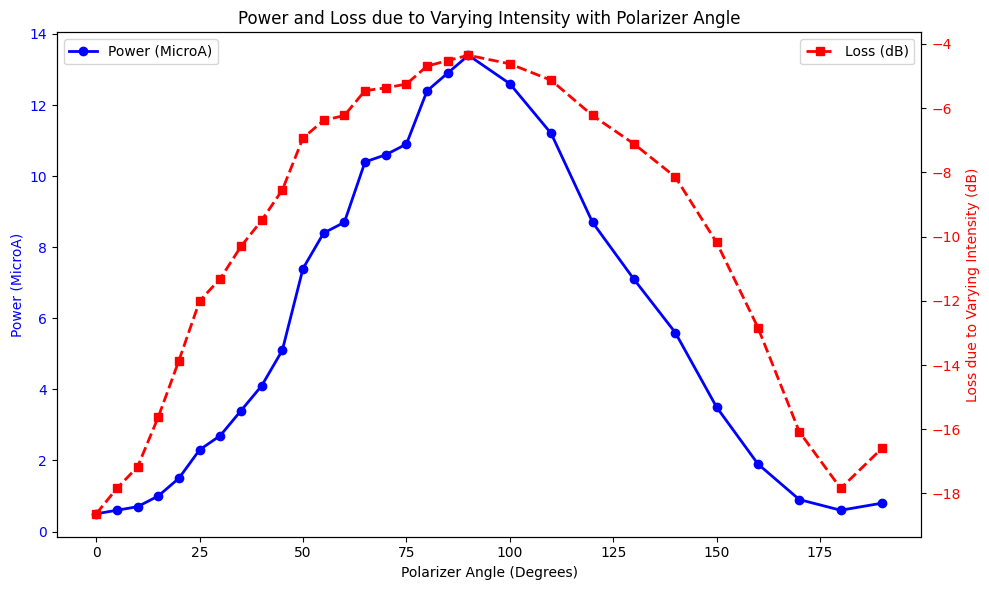

Aim
To measure bending losses, propagation losses, and losses due to variation of input power in optical fibers.
Apparatus
The equipment and materials required for the experiment are:
- Laser diode
- Bending loss apparatus
- Optical fiber
- Fiber coupler
- Detector
- Output measurement unit
Theory
Optical fibers experience losses due to bending, propagation, and input power variation. Bending losses occur when light escapes the fiber due to sharp bends, while propagation losses result from scattering and absorption of light as it propagates through the fiber.
Propagation Loss Formula:
Propagation Loss (dB) = 10 log10(Pout / Pin)
Procedure
Step-by-step instructions for the experiment:
- Set up the apparatus with a laser diode, fiber coupler, and detector.
- For bending losses, measure the transmitted power for different bend circumferences using the bending loss apparatus.
- For propagation losses, measure the input and output power of the fiber and calculate the loss using the formula.
- For input power variation, vary the polarizer angle and observe the transmitted power.
Observations
Bending Loss
| Level | Circumference of Bend | Trial-1 (MicroA) | Trial-2 (MicroA) | Avg Value | Bending Loss (in db) |
|---|---|---|---|---|---|
| L1 | 20.5 | 23.5 | 23.5 | 23.5 | -1.9122500218473841 |
| L2 | 17.5 | 22.3 | 21.5 | 21.9 | -2.2184874961635637 |
| L3 | 14.5 | 20.8 | 21.3 | 21.05 | -2.3904076428478755 |
| L4 | 11.5 | 19.4 | 18.7 | 19.05 | -2.8239788444483653 |
Varying Power
| Polarizer Angle | Power (MicroA) | Loss due to Varying Intensity |
|---|---|---|
| 0 | 0.5 | -18.633228601204557 |
| 5 | 0.6 | -17.841416140728313 |
| 10 | 0.7 | -17.17194824442218 |
| 15 | 1 | -15.622928644564746 |
| 20 | 1.5 | -13.862016054007935 |
| 25 | 2.3 | -12.005650284388821 |
| 30 | 2.7 | -11.309291002974874 |
| 35 | 3.4 | -10.308139474142198 |
| 40 | 4.1 | -9.495090077367392 |
| 45 | 5.1 | -8.547226883585385 |
| 50 | 7.4 | -6.930611447254985 |
| 55 | 8.4 | -6.3801357839459305 |
| 60 | 8.7 | -6.227736118378562 |
| 65 | 10.4 | -5.452595251576944 |
| 70 | 10.6 | -5.369869991917044 |
| 75 | 10.9 | -5.24866366515851 |
| 80 | 12.4 | -4.688711792942397 |
| 85 | 12.9 | -4.5170315415722575 |
| 90 | 13.4 | -4.35188066091667 |
| 100 | 12.6 | -4.619223193389118 |
| 110 | 11.2 | -5.1307484178629315 |
| 120 | 8.7 | -6.227736118378562 |
| 130 | 7.1 | -7.110345157373995 |
| 140 | 5.6 | -8.141048374502745 |
| 150 | 3.5 | -10.182248201061991 |
| 160 | 1.9 | -12.835392635036458 |
| 170 | 0.9 | -16.0805035501715 |
| 180 | 0.6 | -17.841416140728313 |
| 190 | 0.8 | -16.59202877464531 |
Propagation Loss
Power In: 200 MicroA
Power Out: 36.5 MicroA
Propagation Loss: -7.39 dB
Conclusion/Results
The experiment successfully demonstrated the impact of bending, propagation, and input power variation on optical fiber losses. Bending losses increased with sharper bends, propagation losses were observed due to scattering and absorption, and power variation losses correlated with the polarizer angle.